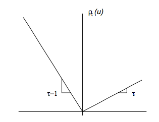

Julia Version 1.9.3
Commit bed2cd540a1 (2023-08-24 14:43 UTC)
Build Info:
Official https://julialang.org/ release
Platform Info:
OS: macOS (x86_64-apple-darwin22.4.0)
CPU: 8 × Intel(R) Core(TM) i5-8279U CPU @ 2.40GHz
WORD_SIZE: 64
LIBM: libopenlibm
LLVM: libLLVM-14.0.6 (ORCJIT, skylake)
Threads: 2 on 8 virtual coresLinear Programming
Advanced Statistical Computing
Joong-Ho Won
Seoul National University
November 2023
Status `~/Dropbox/class/M1399.000200/2023/M1300_000200-2023fall/lectures/16-lp/Project.toml`
[1e616198] COSMO v0.8.8
[f65535da] Convex v0.15.3
[a93c6f00] DataFrames v1.6.1
[2e9cd046] Gurobi v1.2.0
[b99e6be6] Hypatia v0.7.3
[b6b21f68] Ipopt v1.5.1
[b8f27783] MathOptInterface v1.22.0
[6405355b] Mosek v10.1.3
[1ec41992] MosekTools v0.15.1
[91a5bcdd] Plots v1.39.0
[c946c3f1] SCS v1.3.1Linear programming (LP)
- A general linear program takes the form \[ \begin{array}{ll} \text{minimize}& \mathbf{c}^T \mathbf{x} \\ \text{subject to}& \mathbf{A} \mathbf{x} = \mathbf{b} \\ & \mathbf{G} \mathbf{x} \leq \mathbf{h}. \end{array} \] Linear program is a convex optimization problem, why?
- The standard form of an LP is \[ \begin{array}{ll} \text{minimize}& \mathbf{c}^T \mathbf{z} \\ \text{subject to}& \mathbf{A} \mathbf{z} = \mathbf{b} \\ & \mathbf{z} \geq \mathbf{0}. \end{array} \]
To transform a general linear program into the standard form, we introduce the slack variables \(\mathbf{s} \geq \mathbf{0}\) such that \(\mathbf{G} \mathbf{x} + \mathbf{s} = \mathbf{h}\). Then we write \(\mathbf{x} = \mathbf{x}^+ - \mathbf{x}^-\), where \(\mathbf{x}^+ \geq \mathbf{0}\) and \(\mathbf{x}^- \geq \mathbf{0}\). This yields the problem \[ \begin{array}{ll} \text{minimize}& \mathbf{c}^T (\mathbf{x}^+ - \mathbf{x}^-) \\ \text{subject to}& \mathbf{A} (\mathbf{x}^+ - \mathbf{x}^-) = \mathbf{b} \\ & \mathbf{G} (\mathbf{x}^+ - \mathbf{x}^-) + \mathbf{s} = \mathbf{h} \\ & \mathbf{x}^+ \geq \mathbf{0}, \mathbf{x}^- \geq \mathbf{0}, \mathbf{s} \geq \mathbf{0} \end{array} \] in \(\mathbf{x}^+\), \(\mathbf{x}^-\), and \(\mathbf{s}\). Letting \(\mathbf{z} = (\mathbf{x}^{+}, \mathbf{x}^{-}, \mathbf{s})\) makes the formulation standard: \[ \begin{array}{ll} \text{minimize}& (\mathbf{c}^T, -\mathbf{c}^T, \mathbf{0}) \mathbf{z} \\ \text{subject to}& [\mathbf{A}, -\mathbf{A}, \mathbf{0}] \mathbf{z} = \mathbf{b} \\ & [\mathbf{G}, -\mathbf{G}, \mathbf{I}] \mathbf{z} = \mathbf{h} \\ & \mathbf{z} \geq \mathbf{0} \end{array} \]
Slack variables are often used to transform a complicated inequality constraint to simple non-negativity constraints.
The inequality form of an LP is \[ \begin{array}{ll} \text{minimize}& \mathbf{c}^T \mathbf{x} \\ \text{subject to}& \mathbf{G} \mathbf{x} \leq \mathbf{h}. \end{array} \]
Some software, e.g.,
solveLPin R, requires an LP be written in either standard or inequality form. Modeling tools do this for you.
Problems that can be formulated as LP
Convex piecewise-linear minimization problem
\[ \begin{array}{ll} \text{minimize}& \max_{i=1,\ldots,m} (\mathbf{a}_i^T \mathbf{x} + b_i) \end{array} \] can be transformed to an LP \[ \begin{array}{ll} \text{minimize}& t \\ \text{subject to}& \mathbf{a}_i^T \mathbf{x} + b_i \le t, \quad i = 1,\ldots,m, \end{array} \] in \(\mathbf{x}\) and \(t\).
Apparently \[ \text{minimize} \max_{i=1,\ldots,m} |\mathbf{a}_i^T \mathbf{x} + b_i| \] and \[ \text{minimize} \max_{i=1,\ldots,m} (\mathbf{a}_i^T \mathbf{x} + b_i)_+ \] are also LP.
Linear fractional programming
\[ \begin{array}{ll} \text{minimize}& \frac{\mathbf{c}^T \mathbf{x} + d}{\mathbf{e}^T \mathbf{x} + f} \\ \text{subject to}& \mathbf{A} \mathbf{x} = \mathbf{b} \\ & \mathbf{G} \mathbf{x} \leq \mathbf{h} \\ & \mathbf{e}^T \mathbf{x} + f > 0 \end{array} \] can be transformed to an LP \[ \begin{array}{ll} \text{minimize}& \mathbf{c}^T \mathbf{y} + d z \\ \text{subject to}& \mathbf{G} \mathbf{y} - z \mathbf{h} \leq \mathbf{0} \\ & \mathbf{A} \mathbf{y} - z \mathbf{b} = \mathbf{0} \\ & \mathbf{e}^T \mathbf{y} + f z = 1 \\ & z \ge 0 \end{array} \] in \(\mathbf{y}\) and \(z\), via transformation of variables \[ \begin{array}{ll} \mathbf{y} = \frac{\mathbf{x}}{\mathbf{e}^T \mathbf{x} + f}, \quad z = \frac{1}{\mathbf{e}^T \mathbf{x} + f}. \end{array} \] See Section 4.3.2 of Boyd and Vandenberghe (2004) for proof.
LP example 1: compressed sensing
Compressed sensing Candes and Tao (2006) and Donoho (2006) tried to address a fundamental question: how to compress and transmit a complex signal (e.g., musical clips, mega-pixel images), which can be decoded to recover the original signal?
Suppose a signal \(\mathbf{x} \in \mathbb{R}^n\) is sparse, in the sense taht there are at most \(s\) non-zero components. We undersample the signal by multiplying a (fat) measurement matrix \(\mathbf{A} \in \mathbb{R}^{m\times n}\) that has iid normal entries. That is, our measurements are \(\mathbf{y} = \mathbf{A} \mathbf{x}\) if there is no noise. Note this is to find a solution to an underdetermined linear system.
- Candes, Romberg and Tao (2006) showed that the solution to \[ \begin{array}{ll} \text{minimize}& \|\mathbf{x}\|_1 \\ \text{subject to}& \mathbf{A} \mathbf{x} = \mathbf{y} \end{array} \] exactly recovers the true signal under certain conditions on \(\mathbf{A}\) when \(n \gg s\) and \(m \approx s \ln(n/s)\). Why sparsity is a reasonable assumption? Virtually all real-world images have low information content. This is the basis of JPEG and MPEG image compression formats.
Also used in fast medical imaging:
Fast and accurate reconstruction for susceptibility source separation in QSM”, Seyoon Ko, Jingu Lee, Joong-Ho Won, and Jongho Lee, ISMRM 2018.
Compared to the minimum \(\ell_2\) norm solution (Moore-Penrose), minimum \(\ell_1\) solution does not have a closed form solution. However, it is a convex optimization problem.
The \(\ell_1\) minimization problem is apparently an LP, by writing \(\mathbf{x} = \mathbf{x}^+ - \mathbf{x}^-\), \[ \begin{array}{ll} \text{minimize}& \mathbf{1}^T (\mathbf{x}^+ + \mathbf{x}^-) \\ \text{subject to}& \mathbf{A} (\mathbf{x}^+ - \mathbf{x}^-) = \mathbf{y} \\ & \mathbf{x}^+ \geq \mathbf{0}, \mathbf{x}^- \geq \mathbf{0}. \end{array} \]
Numerical examples:
- Generate a sparse signal and sub-sampling
using Plots, Random
# random seed
Random.seed!(280)
# Size of signal
n = 1024
# Sparsity (# nonzeros) in the signal
s = 20
# Number of samples (undersample by a factor of 8)
m = 128
# Generate and display the signal
x0 = zeros(n)
x0[rand(1:n, s)] = randn(s)
# Generate the random sensing matrix
A = randn(m, n) / m
# Subsample by multiplexing
y = A * x0;Solve LP by modeling tool Convex.jl
using Convex
# Use COSMO solver
using COSMO
solver = COSMO.Optimizer()
## Use SCS solver
# using SCS
# solver = SCS.Optimizer()
## Use Mosek solver
# using Mosek, MosekTools, MathOptInterface
# const MOI = MathOptInterface
# solver = Mosek.Optimizer()
## Use Hypatia solver
# using Hypatia
# solver = Hypatia.Optimizer()
# Set up optimizaiton problem
x = Variable(n)
problem = minimize(norm(x, 1))
problem.constraints += A * x == y
# Solve the problem
@time solve!(problem, solver)------------------------------------------------------------------
COSMO v0.8.8 - A Quadratic Objective Conic Solver
Michael Garstka
University of Oxford, 2017 - 2022
------------------------------------------------------------------
Problem: x ∈ R^{2049},
constraints: A ∈ R^{2177x2049} (136193 nnz),
matrix size to factor: 4226x4226,
Floating-point precision: Float64
Sets: Nonnegatives of dim: 2048
ZeroSet of dim: 129
Settings: ϵ_abs = 1.0e-05, ϵ_rel = 1.0e-05,
ϵ_prim_inf = 1.0e-04, ϵ_dual_inf = 1.0e-04,
ρ = 0.1, σ = 1e-06, α = 1.6,
max_iter = 5000,
scaling iter = 10 (on),
check termination every 25 iter,
check infeasibility every 40 iter,
KKT system solver: QDLDL
Acc: Anderson Type2{QRDecomp},
Memory size = 15, RestartedMemory,
Safeguarded: true, tol: 2.0
Setup Time: 30.72ms
Iter: Objective: Primal Res: Dual Res: Rho:
1 -8.1502e+03 8.5107e+00 5.9185e-01 1.0000e-01
25 3.9077e+00 1.6492e-01 2.2811e-02 1.0000e-01
50 1.2012e+01 1.8832e-01 1.4997e-02 1.0000e-01
75 1.2037e+01 5.3129e-02 6.5928e-04 1.0000e-01
100 1.3004e+01 3.6530e-02 4.5526e-04 1.0000e-01
125 1.3078e+01 3.2371e-02 4.9781e-02 5.8867e-01
150 1.4632e+01 5.1902e-02 3.0809e-02 5.8867e-01
175 1.4675e+01 5.2857e-03 3.7705e-03 5.8867e-01
200 1.4687e+01 4.5306e-03 1.4478e-03 5.8867e-01
225 1.4720e+01 9.0452e-04 6.2459e-04 5.8867e-01
250 1.4711e+01 2.4200e-05 4.4063e-05 5.8867e-01
275 1.4710e+01 5.8911e-08 1.0621e-07 5.8867e-01
------------------------------------------------------------------
>>> Results
Status: Solved
Iterations: 295 (incl. 20 safeguarding iter)
Optimal objective: 14.71
Runtime: 0.206s (205.75ms)
0.289548 seconds (29.13 k allocations: 102.016 MiB, 9.83% gc time)LP example 2: quantile regression

In linear regression, we model the mean of response variable as a function of covariates.
In many situations, the error variance is not constant, the distribution of \(y\) may be asymmetric, or we simply care about the quantile(s) of response variable. Quantile regression offers a better modeling tool in these applications.
For a cumulative distribution function \(F_Y\) of \(Y\) on \(\mathbb{R}\), the \(\tau\)-quantile is \(q_{\tau} = F_Y^{-1}(\tau) \triangleq \inf\{y: F_Y(y) \geq \tau\}\).
- It can be shown that \(q_{\tau}\) minimizes \(L(q) = \mathbf{E}[\rho_{\tau}(Y - q)]\) where \(\rho_\tau(u) = u (\tau - 1_{\{u < 0\}})\).

source: https://i.stack.imgur.com/DmKq7.png
{kind=link}
The conditional quantile of \(Y\) given \(X=\mathbf{x}\) is then \(q_{\tau}(\mathbf{x}) = \inf\{y: F_{Y|X}(y | \mathbf{x}) \geq \tau \}\), where \(F_{Y|X}(\cdot | \mathbf{x})\) is the conditional CDF of \(Y\) given \(X=\mathbf{x}\).
We model \(q_{\tau}(\mathbf{x}) = \beta^T\mathbf{x}\) for each \(\tau\).
Thus in practice we minimize the sample loss function \[ L(\beta) = \frac{1}{n}\sum_{i=1}^n \rho_\tau (y_i - \mathbf{x}_i^T \beta). \]
Writing \(\mathbf{y} - \mathbf{X} \beta = \mathbf{r}^+ - \mathbf{r}^-\), this is equivalent to the LP \[ \begin{array}{ll} \text{minimize} & \tau \mathbf{1}^T \mathbf{r}^+ + (1-\tau) \mathbf{1}^T \mathbf{r}^- \\ \text{subject to} & \mathbf{r}^+ - \mathbf{r}^- = \mathbf{y} - \mathbf{X} \beta \\ & \mathbf{r}^+ \geq \mathbf{0}, \mathbf{r}^- \geq \mathbf{0} \end{array}{ll} \] in \(\mathbf{r}^+\), \(\mathbf{r}^-\), and \(\beta\).
Special case: LAD (\(\ell_1\) regression)
A popular method in robust statistics is the least absolute deviation (LAD) regression that minimizes the median absolute deviation (MAD) rather than the mean squared deviation. This in fact minimizes the \(\ell_1\) norm of the residual vector \(\|\mathbf{y} - \mathbf{X} \beta\|_1\). This apparently is equivalent to the LP \[ \begin{array}{ll} \text{minimize}& \mathbf{1}^T (\mathbf{r}^+ + \mathbf{r}^-) \\ \text{subject to} & \mathbf{r}^+ - \mathbf{r}^- = \mathbf{y} - \mathbf{X} \beta \\ & \mathbf{r}^+ \geq \mathbf{0}, \mathbf{r}^- \geq \mathbf{0} \end{array} \] in \(\mathbf{r}^+\), \(\mathbf{r}^-\), and \(\beta\).
\(\ell_1\) regression = LAD = 1/2-quantile regression.
LP Example 3: \(\ell_\infty\) regression (Chebychev approximation)
- Minimizing the worst possible residual \(\|\mathbf{y} - \mathbf{X} \beta\|_\infty\) is equivalent to the LP \[ \begin{array}{ll} \text{minimize}& t \\ \text{subject to}& -t \le y_i - \mathbf{x}_i^T \beta \le t, \quad i = 1,\dots,n \end{array} \] in variables \(\beta\) and \(t\).
LP Example 4: Dantzig selector
- Candes and Tao (2007) proposed a variable selection method called the Dantzig selector that solves \[ \begin{array}{ll} \text{minimize}& \|\mathbf{X}^T (\mathbf{y} - \mathbf{X} \beta)\|_\infty \\ \text{subject to}& \sum_{j=2}^p |\beta_j| \le t, \end{array} \] which can be transformed to an LP. They named the method after George Dantzig, who invented the simplex method for efficiently solving LP in the 1950s.
LP Example 5: 1-norm SVM
In two-class classification problems, we are given training data \((\mathbf{x}_i, y_i)\), \(i=1,\ldots,n\), where \(\mathbf{x}_i \in \mathbb{R}^p\) are feature vectors and \(y_i \in \{-1, 1\}\) are class labels. Zhu, Rosset, Tibshirani, and Hastie (2004) proposed the 1-norm support vector machine (SVM) that achieves the dual purpose of classification and feature selection. Denote the solution of the optimization problem \[ \begin{array}{ll} \text{minimize}& \sum_{i=1}^n \left[ 1 - y_i \left( \beta_0 + \sum_{j=1}^p x_{ij} \beta_j \right) \right]_+ \\ \text{subject to}& \|\beta\|_1 = \sum_{j=1}^p |\beta_j| \le t \end{array} \] by \(\hat \beta_0(t)\) and \(\hat \beta(t)\).
Note \([x]_+ = \max(0, x) = \rho_1(x)\). This 1-norm SVM problem is an LP.
1-norm SVM classifies a future feature vector \(\mathbf{x}\) by the sign of fitted model \[ \begin{array}{ll} \hat f(\mathbf{x}) = \hat \beta_0 + \mathbf{x}^T \hat \beta. \end{array} \]
using Random, LinearAlgebra, SparseArrays
using DataFrames
using Mosek, MosekTools, MathOptInterface
const MOI = MathOptInterface
Random.seed!(123) # seed
n, p = 100, 10
# Design matrix
X = [ones(n, 1) randn(n, p)]
# True regression coefficients (first 5 are non-zero)
β = [1.0; randn(5); zeros(p - 5)]
Y = sign.(X * β + 5 * randn(n))
# solve at a grid of λ
#opt = () -> COSMO.Optimizer(verbose=false)
λgrid = 0:0.5:10
β̂svmpath = zeros(length(λgrid), size(X, 2)) # each row is β̂ at a λ
β̂svm = Variable(size(X, 2))
@time for i in 1:length(λgrid)
λ = λgrid[i]
# objective
problem = minimize(sum(pos(1 - Y .* (X * β̂svm))) + λ * norm(β̂svm[2:end], 1))
solver = Mosek.Optimizer() # MOSEK this time!
MOI.set(solver, MOI.RawOptimizerAttribute("LOG"), 0) # keep silent
solve!(problem, solver)
β̂svmpath[i, :] = β̂svm.value
end 0.208457 seconds (299.61 k allocations: 28.063 MiB)Remark
Many more applications of LP, especially in the assignment problem: airport scheduling (Copenhagen airport uses Gurobi), airline flight scheduling, NFL scheduling, match.com, …
Apparently any loss/penalty or loss/constraint combinations of form \[ \{\ell_1, \ell_\infty, \text{quantile}\} \times \{\ell_1, \ell_\infty, \text{quantile}\}, \] possibly with affine (equality and/or inequality) constraints, can be formulated as an LP.